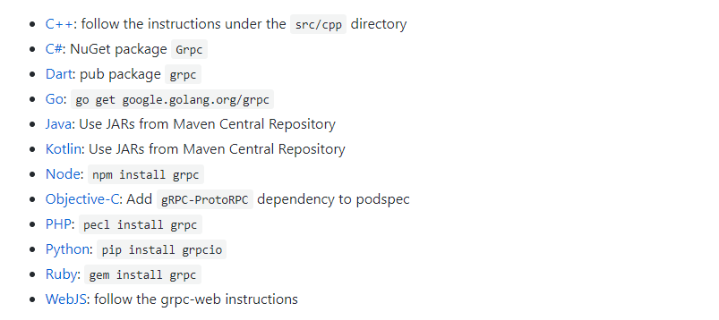
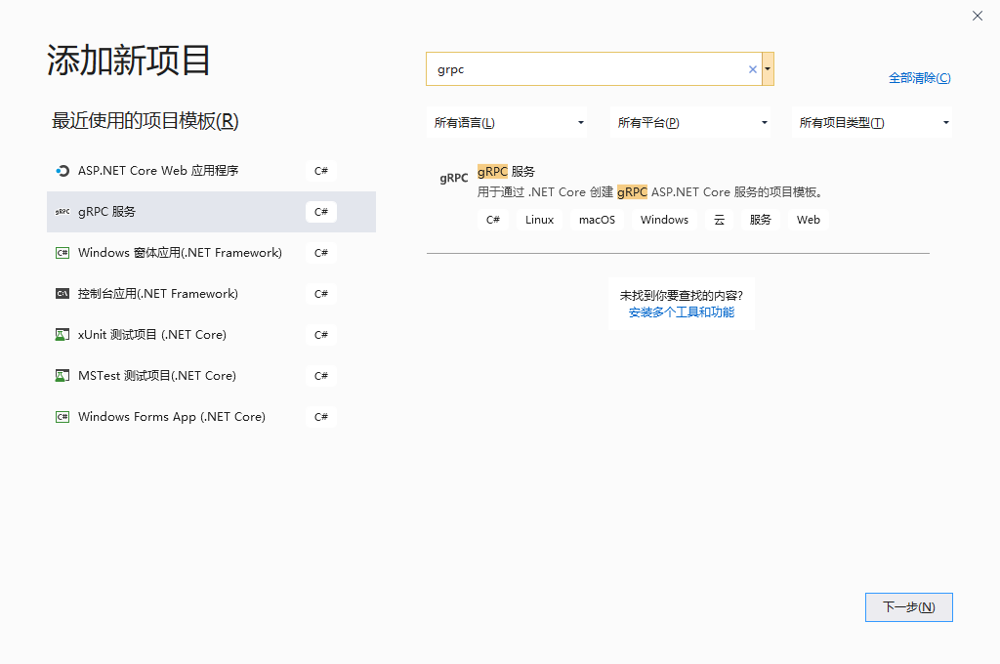

gRPC 简介
gRPC（gRPC Remote Procedure Calls）是一个由 Google 开源的，跨语言的，高性能的远程过程调用（RPC）框架。 gRPC 使客户端和服务端应用程序可以透明地进行通信，并简化了连接系统的构建。它使用 HTTP/2 作为通信协议，使用 Protocol Buffers 作为序列化协议。
Github：https://github.com/grpc/grpc
DotNet Core 官方示例：https://github.com/dotnet/AspNetCore.Docs/tree/master/aspnetcore/grpc
gRPC 的主要优点
- 现代高性能轻量级 RPC 框架。
- 约定优先的 API 开发，默认使用 Protocol Buffers 作为描述语言，允许与语言无关的实现。
- 可用于多种语言的工具，以生成强类型的服务器和客户端。
- 支持双向流式的请求和响应，对批量处理、低延时场景友好。
- 通过 Protocol Buffers 二进制序列化减少网络使用。
- 使用 HTTP/2 进行传输
gRPC 适用的场景
- 高性能的轻量级微服务。
- 多语言混合开发的 Polyglot 系统。
- 需要处理流式处理请求或响应的点对点实时通信服务。
gRPC 不适用的场景
- 浏览器可访问的 API：浏览器不完全支持 gRPC。虽然 gRPC-Web 可以提供浏览器支持，但是它有局限性，引入了服务器代理。
- 广播实时通信：gRPC 支持通过流进行实时通信，但不存在向已注册连接广播消息的概念。
- 进程间通信：进程必须承载 HTTP/2 才能接受传入的 gRPC 调用，对于 Windows，进程间通信管道是一种更快速的方法。
gRPC 支持的语言
目前 gRPC 已经实现了对主流语言的支持，以下语言在 gRPC 的 Github 中都提供了实现。

在 DotNet Core 中使用 gRPC
创建服务端
Visual Studio 2019 中已经集成了 gRPC 项目的模版，我们可以通过这个模版快速的创建一个基于 DotNet Core 的 gRPC 项目。 
创建好的项目结构如下：

这时候项目不用做任何修改就可以运行了，那么这个项目和普通的 DotNet Core 项目有什么不同呢？
首先项目文件 GrpcService.csproj 中引入了 Grpc.AspNetCore 包。
<ItemGroup>
<PackageReference Include="Grpc.AspNetCore" Version="2.27.0" />
</ItemGroup>在 appsettings.json 文件中多出了一个 Kestrel 节点，配置 Protocols 使用 Http2 协议。
"Kestrel": {
"EndpointDefaults": {
"Protocols": "Http2"
}
}中
服务端 GreeterService 类的实现如下：
public class GreeterService : Greeter.GreeterBase
{
private readonly ILogger<GreeterService> _logger;
public GreeterService(ILogger<GreeterService> logger)
{
_logger = logger;
}
public override Task<HelloReply> SayHello(HelloRequest request, ServerCallContext context)
{
return Task.FromResult(new HelloReply
{
Message = "Hello " + request.Name
});
}
}服务端 Startup 类中注入了 gRPC 服务：
public void ConfigureServices(IServiceCollection services)
{
services.AddGrpc();
}
public void Configure(IApplicationBuilder app, IWebHostEnvironment env)
{
if (env.IsDevelopment())
{
app.UseDeveloperExceptionPage();
}
app.UseRouting();
app.UseEndpoints(endpoints =>
{
endpoints.MapGrpcService<GreeterService>();
endpoints.MapGet("/", async context =>
{
await context.Response.WriteAsync("Communication with gRPC endpoints must be made through a gRPC client. To learn how to create a client, visit: https://go.microsoft.com/fwlink/?linkid=2086909");
});
});
}gRPC 工具会根据 proto 文件自动生成需要使用的类，生成的类会存放在项目的 obj\Debug\netcoreapp3.1 目录下：
 !
!
创建客户端
客户端项目需要手动的创建，创建方法也很简单，直接在解决方案中添加一个新的项目即可，这里我创建了一个空的 Web 项目。
项目创建好了以后首先要把 proto 文件添加到项目中，这里需要用到 dotnet-grpc 这个工具。
在命令行下安装 gRPC 工具：
dotnet tool install dotnet-grpc -g安装完以后从命令行进入 GrpcClient 项目的目录后，添加服务端的 proto 文件到客户端。
dotnet grpc add-file ..\GrpcService\Protos\greet.proto 也可以使用远程路径的 proto 文件：
dotnet grpc add-url
https://raw.githubusercontent.com/grpc/grpc/master/examples/protos/keyvaluestore.proto -o /Protos/keyvaluesrore.proto导入 proto 文件以后，GrpcClient 项目文件中会增加如下代码：
<ItemGroup>
<Protobuf Include="..\GrpcService\Protos\greet.proto"
Link="Protos\greet.proto" />
<Protobuf Include="XXXX/Protos/keyvaluesrore.proto"
Link="Protos\keyvaluesrore.proto">
<SourceUrl>https://raw.githubusercontent.com/grpc/grpc/master/examples/protos/keyvaluestore.proto</SourceUrl>
</Protobuf>
</ItemGroup>dotnet-grpc 除了以上用法还支持以下命令，详细用法可以查阅 Microsoft Docs。
- dotnet grpc add-file
- dotnet grpc add-url
- dotnet grpc remove
- dotnet grpc refresh
接下来修改 Startup 中的代码，在 ConfigureServices(IServiceCollection services) 方法注入 gRPC 客户端代码：
services.AddGrpcClient<GreeterClient>(options => options.Address = new
Uri("https://localhost:5001"));注：
Uri("https://localhost:5001")中使用服务端的端口和地址。
在 Configure 方法中添加响应代码：
app.UseEndpoints(endpoints =>
{
endpoints.MapGet("/", async context =>
{
GreeterClient client = context.RequestServices.GetService<GreeterClient>();
HelloRequest request = new HelloRequest();
request.Name = "Charles";
var reply = await client.SayHelloAsync(request);
await context.Response.WriteAsync(reply.Message);
});
});如果不想使用注入的方式也可以直接调用：
var httpClientHandler = new HttpClientHandler();
var httpClient = new HttpClient(httpClientHandler);
var channel = GrpcChannel.ForAddress(Address);
var client = new GreeterClient(channel);
HelloRequest request = new HelloRequest
{
Name = "Charles"
};
var reply = await client.SayHelloAsync(request);
await context.Response.WriteAsync(reply.Message);启动项目后在客户端可以看到输出了服务端返回的内容：
Hello Charles限制消息大小
消息大小限制是一种有助于防止 gRPC 消耗过多资源的机制。gRPC 使用每个消息的大小限制来管理传入和传出消息。 默认情况下，gRPC 将传入消息限制为 4 MB。 传出消息没有限制。 在服务端上，可以使用 AddGrpc 为应用中的所有服务配置 gRPC 消息限制：
services.AddGrpc(options =>
{
options.MaxReceiveMessageSize = 1 * 1024 * 1024; // 1 MB
options.MaxSendMessageSize = 1 * 1024 * 1024; // 1 MB
});调用不安全的 gRPC 服务：
若要使客户端调用不安全的 gRPC 服务，需要修改客户端的配置。
AppContext.SetSwitch("System.Net.Http.SocketsHttpHandler.Http2UnencryptedSupport", true);调用不受信任、无效证书调用 gRPC 服务
DotNet gRPC 客户端要求服务具有受信任的证书，若要调用不受信任、无效证书调用 gRPC 服务，需要修改客户端请求的代码：
services.AddGrpcClient<GreeterClient>(options => options.Address = new Uri(Address)).
ConfigurePrimaryHttpMessageHandler(provider =>
{
var handler = new SocketsHttpHandler();
handler.SslOptions.RemoteCertificateValidationCallback = (sender, certificate, chain, sslPolicyErrors) => true; // 允许不受信任、无效证书
return handler;
});非注入方式：
var httpClientHandler = new HttpClientHandler
{
ServerCertificateCustomValidationCallback = HttpClientHandler.DangerousAcceptAnyServerCertificateValidator
};
var httpClient = new HttpClient(httpClientHandler);
var channel = GrpcChannel.ForAddress(Address);
var client = new GreeterClient(channel);
HelloRequest request = new HelloRequest
{
Name = "Charles"
};
var reply = await client.SayHelloAsync(request);身份验证和授权
服务端
为服务端加入身份验证也很简单，首先需要为项目引入 Microsoft.AspNetCore.Authentication.JwtBearer 这个包。
<ItemGroup>
<PackageReference Include="Grpc.AspNetCore" Version="2.27.0" />
<PackageReference Include="Microsoft.AspNetCore.Authentication.JwtBearer" Version="3.1.0" />
</ItemGroup>修改服务端 Startup 类的代码，分别在 Configure 和 ConfigureServices 方法中加入如下代码：
services.AddAuthorization(options =>
{
options.AddPolicy(JwtBearerDefaults.AuthenticationScheme, policy =>
{
policy.AddAuthenticationSchemes(JwtBearerDefaults.AuthenticationScheme);
policy.RequireClaim(ClaimTypes.Name);
});
});
services.AddAuthentication(JwtBearerDefaults.AuthenticationScheme)
.AddJwtBearer(options =>
{
options.TokenValidationParameters =
new TokenValidationParameters
{
ValidateAudience = false,
ValidateIssuer = false,
ValidateActor = false,
ValidateLifetime = true,
IssuerSigningKey = SecurityKey
};
}); app.UseAuthentication();
app.UseAuthorization();
app.UseEndpoints(endpoints =>
{
endpoints.MapGrpcService<GreeterService>();
endpoints.MapGet("/getToken", context =>
{
return context.Response.WriteAsync(GenerateJwtToken(context.Request.Query["name"]));
});
});生成 Token 的方法：
private string GenerateJwtToken(string name)
{
if (string.IsNullOrEmpty(name))
{
throw new InvalidOperationException("Name is not specified.");
}
var claims = new[] { new Claim(ClaimTypes.Name, name) };
var credentials = new SigningCredentials(SecurityKey, SecurityAlgorithms.HmacSha256);
var token = new JwtSecurityToken("JwtSecurityIssuer", "JwtSecurityClients", claims, expires: DateTime.Now.AddSeconds(60), signingCredentials: credentials);
return JwtTokenHandler.WriteToken(token);
}客户端
客户端的实现逻辑是在请求服务端之前先从服务端获取到 Token，在之后调用响应服务的时候将 Token 放入请求头中传入服务端，如果不传入直接请求服务端会返回 401。
var httpClient = new HttpClient();
var httpRequest = new HttpRequestMessage
{
RequestUri = new Uri($"{Address}/getToken?name=Charles"),
Method = HttpMethod.Get,
Version = new Version(2, 0)
};
var tokenResponse = await httpClient.SendAsync(httpRequest);
tokenResponse.EnsureSuccessStatusCode();
var token = await tokenResponse.Content.ReadAsStringAsync();
Metadata headers = null;
if (token != null)
{
headers = new Metadata
{
{ "Authorization", $"Bearer {token}" }
};
}
var channel = GrpcChannel.ForAddress(Address);
var client = new GreeterClient(channel);
HelloRequest request = new HelloRequest
{
Name = "Charles"
};
var reply = await client.SayHelloAsync(request, headers);总结
以上就是在 DotNet Core 中使用 gRPC 的常用方法了，想深入学习可以去查看 gRPC DotNet 项目的 Github，里面有很多实例可以参考：https://github.com/grpc/grpc-dotnet/tree/master/examples